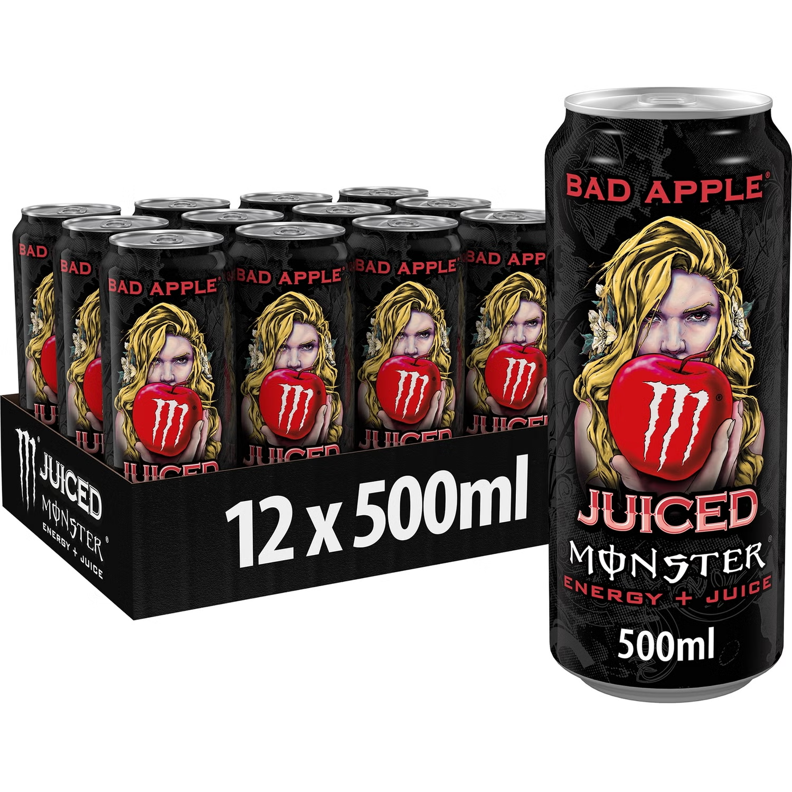

Igelkotten reviews
[Take a look into MansyS belongings] Updated: March. 14th 2025
(ONGOING)
They be letting everyone do a monster review nowadays
- MansyS last words before Igelkotten56 shot him in his skull
Igelkotten56 told me that he was heavily inspired by Espster reviews so we'll see how this plays out.

Published: March 13th 2025
Monster Energy Juiced Aussie Style Lemonade (Review)
As the name suggests, it tastes like lemonade, lemon flavor a little sour, a little sweet with a slightly chemical taste. I've never really understood what the term "fresh" means but I think it fits this one. It's the first monster I've tasted so it's hard to give it a review but I've tasted other energy drinks and this is one of the better ones. Something disturbing I discovered after drinking it was that my pee was green, I mean what on earth makes it green, the drink itself is yellow, have they put radioactive substances in the drink? That aside, the design of the can is very nice and peaceful, it truly makes it pop with the ocean theme. Without looking into it too far I will summarize: My oh my is it as much of a treat for the eyes as the mouth. Warning causes green pee.
8/10

Published: March 14th 2025
Monster Energy Lewis Hamilton Zero Sugar (Review)
Now we have a monster collab. Let me tell you the taste is not what you would expect from the purple, blue and green can design. It tastes like peach and it's very sweet. The sweetness makes it a little tiring towards the end but maybe that's just me personally, still good. The can design is quite nice but i've seen better, after all monster has the best can designs in my opinion. BUT the design is very off putting considering that it tastes like peaches an orange fruit yet orange is nowhere to be found on the can. Weird things have happened when I drink monster as you know GREEN PEE. It happened again HOW but I must say it's more or less a thing I'm laughing about rather than being scared of and I guess that's how it will be in the future. If you look behind the frontside of the can you can see the description where it says “this formula will have you ready for anything” but i was not ready looking down the toilet even though it happened before. My instinct is telling me to not drink monsters but looking back I remember Blaz saying that it happens and he's fine right?
6/10
Published: March 20th 2025
Monster Energy Ultra Peachy Keen (Review)
Yes, another peach one, boring, maybe but a great opportunity to make a comparison between this one and lewis hamilton. But before that some thoughts about some things. First of all espsters last review, there is no way i could compare to that, like just how many words were there. Also i was planning on trying every monster flavor but don't be surprised if i skip ultra rósa. I'm impressed, you need a lot to make reviews like that. The patience, the perseverance, the tenacity, the absolutely traumatising experience to turn into a flower and last but not least THE MONEY. Monster ain't cheap but i'd say that if they got a rating over 5 they are worth trying at least once which is 100% of my ratings for now. Second of all, I realised that the can had some sort of texture to it that the previous ones didn't have but I do know some others do as well. I wonder why some do and some don't and its purpose, is it just so that it feels good holding it? Third of all, the description says “So don't take our word for it, check it out yourself ‘cause it's all good when you're sippin’ ultra peachy keen” Hard not to agree, It's good and when you drink it your mood becomes too. Comparison time let's break it down. Taste: Not much of a difference really, they kinda taste the same, maybe a very minimal difference although the more noticeable thing is the sweetness, Ultra peachy keen is less sweet and in this case something i prefer, it makes it more “refreshing” i believe. Ultra peachy keen wins the taste. Can design: Ultra peachy keen’s can has a nice vibe but it isn't the best. Lewis hamilton looks amazing and I think I've grown to like it more, for shure better than ultra peachy keen but I must say that color compared to taste is much better for ultra peachy keen. Lewis hamilton still wins can design. Radioactive substances: First this isn't something I like so you don't get the wrong idea. Lewis hamilton: Green pee. Ultra peachy keen: No green pee, Epic. Ultra peachy keen wins. I believe taste is the most important factor and therefore I think Ultra peachy keen wins overall. But hey always remember, don't take my word for it, check it out yourself cause it's all good when you're sippin’ ultra peachy keen.
7/10

Published: March 28th 2025
Monster Energy Juice Pipeline Punch (Review)
The reason I picked this one is because it's the number 1 spot on some review I checked on the internet. Now, is it my number 1 too? NO. I thought it could be a 10/10 but not this time. I hope it will happen sooner or later. Even the description says it will be legendary so no wonder I had high expectations for this one. Also i have something to say about espsters last review. Espster I know what you did, you ain’t slick, I never saw it coming but I know what you did. Copying my idéa. But i guess there is no need for apologies since i copied you making monster reviews in the first place. Back to the monster, it's good but it didn't meet my expectations. It tastes like exotic fruits like oranges and passion fruit so if you like drinks that taste that way then you are going to like this one. I would say it has the same vibe as Fanta exotic but it doesn't taste quite the same. Unfortunately I think pipeline punch is a downgrade. Now for the rating.
7/10

Published: April 1st 2025 (April fools)
Monster Energy Juice Rio Punch (Review)
No way, I thought it was gonna be good but this was absolutely amazing.
It is the best monster i've tasted and not only that it’s easily one of my top 3 drinks of all time. I like exotic drinks like this one but unlike Pipeline punch and Fanta exotic for example, this one is built different. It has the same feeling as the first day of summer vacation, when you know that there is no school for weeks and lots of good memories ahead. The nostalgic feeling of playing lego star wars on the ps2. The feeling of getting hit by a scooter on the shin. Nah maybe not that last one. Honestly there is nothing more to say, go try it yourself.
10/10
Published: April 2nd 2025
Monster Energy Juice Rio Punch (Review)
If you are confused about this then you clearly didn't check the release date on the last one. Get fooled. The funny thing is that this isn't even close to being a 10/10.
Rio punch hits you like a punch when you take the first sip. And not even the good type of punch that makes you wake up, get up and get out there. No this punch is the painful type unfortunately. Before we get to the bad stuff I will say that the can design is definitely the best part. It gives a really nice tropical vibe and it's one of the best monster designs i've seen, like for real the person who made it deserves a raise. This drink is a trap to make people hopeful seeing the colorful design tempting you to take a first sip and then mercilessly turning around your experience. Imagine hearing a thousand small voices getting their hopes and dreams crushed. YOU’RE NEXT. You take a sip. At first it feels confusing, not good nor bad, it’s this confusing feeling that makes you curious to keep on going. It feels exotic. No… what is it… Is it candy? But it doesn't feel quite that way either. Chemical? maybe. THEN it’s only a matter of time before you realize that you are crawling right down a rabbit hole and it only keeps on getting worse. The drink is against you. And after a long time it finally stops. Leaving your soulless body behind still wondering. The colorful can, the good reviews, the description that says it does it big and those positive reviews. Liars. That's how my experience was, and I promise you it was 100% as dramatic as I wrote. Yeah, the can even grew out an arm just to punch me and live up to its name. That aside I would describe the taste as a mix between some fruit flavor and that weird energy drink chemical flavor and lastly candy. ya know its in redbull for example. I really don't like the candy flavor in drinks and it tends to make the drinks mid. On top of that, some candy are worse than others and in the whole candy flavor spectrum I can confidently say it's a bad one. Now if any candy flavor makes the drink mid, what does a bad one at that make it? Worse than most red bull flavors. Anyways, that mystery fruity flavor, I think it's citrus but I'm not sure and there is probably some other exotic fruit mixed in as well. So yeah rio punch is not good, I wouldnt say its terrible but definitely not good.
3/10
Published: April 5th 2025
Monster Energy Ultra Black (Review)
What exactly am I feeding myself at this point? Monster ultra black, sounds like a damn stealth bomber model. The monster ultra back is a stealth plane in the US military newly engineered for high speed stealth bombing that can fly at speeds of up to mach three and is equipped with stealth radar jammers and a load of 50 megatons worth of tnt. Buy one now for only 500,000,000,000,000,000 USD to serve your country. Anyways i think that it's about time to explain how my reviews work so i don't get comments filled with all your wrath and anger if or whenever that gets added.Theese are personal ratings of my experience, I have not made any research to find out which one is truly the greatest regarding science and shit, who do you think i am. So if you don't like my reviews just read epsters reviews because those are 100% factual. Here are the scores: 1/10= Terrible and undrinkable stuff. 2/10= Very bad, absolutely do not drink this. 3/10= Bad on the worse side, just dont drink this either. 4/10= Bad on the better side, bad but has some good elements. 5/10= Mid, not bad but not something i would recommend. 6/10= Good on the worse side, good enough to be good but no more. 7/10= Good on the better side, this is the stuff you would drink again. 8/10= Very good, an excellent option. 9/10= Amazing, AKA fire. 10/10= Peak, here are the drinks that you can’t see being beaten. Anyways Like I said before, I recommend you try the ones with a score of 6 or higher. Why? you might ask, and i will tell you. Monster is truly a great series of drinks and if I think it's good then I believe that you may possibly think it is amazing. Monster truly does have an impact on your life, whether it's giving you energy or giving an unique taste experience and that is why i will recommend them. Now I have to say that my ratings are based on other drinks, both energy drinks and sodas, not only comparisons between monsters. These reviews I'm making aren't only reviews, it is also a journey for me tasting new monsters. I hope nobody will dislike how my scores work but if you do, I don't care. Back to the monster. You could say that Monster ultra black tastes like cherry lemonade, sounds crazy but it does. It has a mild cherry flavor with a sour lemony taste. It's not that sweet and the sour makes it seem not sweet at all. So i guess that it doesn't taste much except for the sour, now i like sour stuff but i mean that isn't magically gonna make it taste more and better. Also one thing I want to change is the fact that the can isn’t ultra black. Imagine a totally black can that would be awesome right. Although I think it makes sense for it to have red details because it tastes like cherries. So yeah ultra black is not bad but not something i would recommend.
5/10
Published: May 14th 2025
Monster Energy The Doctor (Review)
Now we have another monster collab. Before I say stuff about this one I have to say that I unfortunately have no more ideas of what lyrics from a Persona song to sneak in. I mean there is no way that you missed that am i right? Anyways the monster tastes like mandarin, yes specifically mandarin.https://www.youtube.com/watch?v=ZNGqBDRJgvoThat’s pretty much it for what it tastes like but it is also a bit bitter. The bitter taste is mostly what makes me dislike it, well not the bitterness itself but the bitter and weird aftertaste. Now I also have to say that the can design is a little basic, still not bad.
Whether the doctor tastes like medicine or not is up to you. No nevermind don’t try it.
4/10

Published: May 27th 2025
Monster Energy Bad Apple (Review)
Not bad.
8/10
Published: May 27th 2025
Monster Energy Ultra White (Review)
Should I do a review on the original monster? I mean I have done like 10 reviews and I still have never tried the original. I might not even do it soon because I have planned to make reviews for three other monsters before, and even after that I might not do the original. This monster however was a very nice citrus monster. It has an amazing can design which is actually my favorite despite the somewhat simple look. And a well rounded citrus taste that doesn't taste more of any specific fruit. So yeah, simple but good, definitely one I would buy again. With that said I still prefer aussie lemonade, sadly. Aussie lemonade is no longer made and it will be tough to find one.
Lately I've seen it slowly fading away in stores until recently when it was no longer there. RIP aussie lemonade I will miss it. I guess this is a good substitute but it won't be the same. This is this and that is that.
7/10

Published: May 28th 2025
Monster Energy Ultra Violet (Review)
A duck walked up to a lemonade stand And he said to the man, running the stand "Hey! (Bum bum bum) Got any grapes?" The man said "No, we just sell lemonade
But it’s cold and it's fresh, and it’s all home-made. Can I get you a glass? "The duck said “I’ll pass.” Then he waddled away, waddle waddle 'Til the very next day, bum bum bum bum bum ba-dum When the duck walked up to the lemonade stand
And he said to the man, running the stand "Hey! (Bum bum bum) Got any grapes? The man said "No but, I do sell this Okay? Why not give it a try?" The duck said "Sure that looks like something nice to buy. GRAPE FLAVORED LEMO- I MEAN MONSTER! They could have called it ultra purple but they didn't, WHY? Ultra violet, a very appetizing name, definitely doesn't make it seem like it causes cancer. Maybe it does. I don't know yet… If so, it's too late. Well I guess if this is my last review you will know why. This one tastes like any other grape soda out there. I bet many haven't even tried a grape soda before but explaining it in another way would be very difficult. So compared to grape soda there is like no difference but that is good in my opinion because i like them. That might be a bit controversial. I have heard that many dislike grape soda but I really liked this one. The can design is just what you would expect from any monster ultra, cool in its own way but nothing truly special.
7/10
MANSYS NOTE: I'm glad you didn't die since I need you for your reviews!

Published: May 30th 2025
Monster Energy Ultra Strawberry Dreams (Review)
Ultra strawberry dreams, does it taste like a dream? Yes it does, just like it should seem. A summer day enlightened by a sun beam. Caffeine pumped directly into your bloodstream. In the description it says stuff about love and strawberries almost like they are trying to curse you into loving this monster. If so, then they have succeeded.
This is the best monster I've tried so far. It has a good can design (nothing special). And an absolutely delicious sour strawberry taste. I mean this really has to be the perfect summer drink to get you going. When I am done making reviews for the monsters that I can find, this will definitely be a go to choise. Additionally, in contemplation of some consideration, the previously mentioned occur the exclusive monster within pantry remarkably come about sole proportion economical appertaining to my realms foremost currency. Deranged, equitable?
90/100

Published: Aug 19th 2025
Monster Energy Ripper (Review)
From the highest mountain to the deepest trench, that is the feeling. After trying ultra strawberry dreams and drinking this one i was really disappointed. The description made it seem like it was gonna be a really good tropical drink but just like rio punch, it ended up tasting like candy, candy that I don't like. Unlike last time I can explain what it tastes like. But before that i will say that this might be the worst monster there is. I mean both the can design and taste are just BAD and it just makes me hope that this is as deep as the trench goes before hitting rock bottom. That said, don't worry this isn't exactly the worst that I have tasted. It tastes like fizzy pop if you know what that is. I know that many like it but I can't understand that, there are so many better options and I definitely don't like it. Lastly it has some fruity elements to it, say something like mango or pineapple and this is what saves it from being a 2/10. The drink won't rip your body apart but it will kill your excitement.
3/10

Published: Aug 19th 2025
Monster Energy Punch Mixxd (Review)
This time the can design actually represents the taste perfectly. It looks like what it tastes and I think it should be that way. Imma get straight to the point, it tastes like cherries and grapes. And now looking at the can you should see what I mean. Unlike the cherry flavor from ultra black, this one tastes like dr pepper. I have nothing against dr pepper but also nothing for it. Now i must say that this one is better than dr pepper. Although I am seriously not sure if it's better than ultra black. In the beginning of making my monster reviews I had the problem that my pee would turn green for some mysterious reason. I can't remember a single time where this has happened since the first two reviews I made but this time it was back and not only that it was worse. They must have had a malfunction in the factory making these and accidentally added double the dose of radioactive substances. I may have overreacted last time this happened, back then it was more like a hint of green. This time though it was like green green. NOT FUN. The drink itself was not bad and it was a bit sour, cherry and grape in drinks doesn't scream sour, maybe that's just the way it is or it had a third taste maybe also a fourth, it is called mixxd after all. FUN.
5 I think/10 Maybe

Published: Aug 19th 2025
Monster Energy Ultra Rosá (Review)
This is another amazing monster, second best so far. The can design is lookin cool and really beautiful with the roses, not only that the taste is just as beautiful. So what does it taste like? It tastes like ultra rosa! Now you might be wondering: is that all you are gonna say about the taste? Yes, yes it is… But let me explain why. So on the description it says that the best way of describing the way it tastes is that it tastes like ultra rosa and since I want to have the best monster reviews I have to deliver accurate taste analyses. The ultra rosa taste you are tasting when tasting the ultra rosa is the taste of ultra rosa you are tasting if tasting the ultra rosa. But for real this one is really good and kinda feels the same as ultra strawberry dreams so it wouldn't be fair to put it any lower. Smells like roses.
9/10

Published: Sep 15th 2025
Monster Energy Viking Berry (Review)
So they made a monster named viking berry VIKING BERRY and decided that the last thing they would do is release it in scandinavia. I had to spend a ridiculous amount of money to get my hands on this, so much that I don't want to remember how much it was. So my first thought before tasting this was to look up if viking berries are real or some fake blue raspberry type of thing and surprisingly it is. FOR REAAAL!!! Here is what is says on google: Viking Choke Berry (Aronia)
Persistent, purplish black berries are high in nutrients and can be used for pies and jellies or left on the shrub to provide food for birds and other wildlife. The berries can persist into spring feeding the first returning robins.
However i dont think that is what the drink is supposed to taste but i cant prove it. Now the taste is quite confusing at least for the first few sips, it tastes like a shit ton of berries mixed so it's possible that the viking berry is one of them. On the other hand i only got the taste of bananas and raspberries plus the other stuff i cant say what it is for sure. The can design is good. Ya know the average viking stuff that you’d imagine and i also really like the colors. Ganska god men inget fantastiskt, jag skulle fortfarande säga att det är värt att testa den en gång OM den tillverkas i ditt land. (cough) (cough) Right the rating.
6 or 7/10 (I'm so sorry)

Published: Sep 15th 2025
Monster Energy Ultra Blue Hawaiian (Review)
I know there is another ultra-blue monster, so is this the same, a remake or something totally new? The can design reminds me of a juiced or punch monster like rio puch and viking berry and not the simple patterns of an ultra-monster. The taste on the other hand is something that you’d find in an ultra-monster, if you put on a blindfold and tasted this one you wouldn’t mistake it for a juiced one. Moreover it doesn’t matter because ultra-monsters have one thing in common in which they are named after, they are sugar free, of course this one included. The taste has a very low profile fruit taste and a touch of coconut. Not only that, it also has a familiar weird taste and I think I know what it is. So from my past reviews you have seen that I often say that there is another unidentified taste on top of the others, either I'm just bad at identifying tastes or it is the same one that became more clear in this monster due to it having a low flavor profile. On the reviews on many if not all monsters it says that the flavor is fruits or whatever mixed with the original monster blend. I think that the weird taste may be the original monster taste, maybe I have a good idea of what the original monster flavor is like even though I've never had the original one. That fruit taste is probably pineapple, coconut and pineapple, a classic combo. Fresh summery drink, fresh summery energy perfect for the autumn.
7/10

Published: Oct 15th 2025
Monster Energy Ultra Vice Guava (Review)
This one has a more interesting can design than the flavor itself. This one was really underwhelming the flavor. It is of course supposed to taste like guava but it doesn't taste like much at all. It might be guava flavored but I'm not sure when it tastes like sweet flavored water. The can design on the other hand is really well made, the colors match perfectly and it has a nice but simple pattern and to top it all off, the top of the can is colored as well. Having colored the top part of the can really makes a difference. It just looks so much better that way and the only monster except for this one that i know of having this is the regular sugar free one. I even think this is my new favorite ultra-monster design. On another note I must mention that I did try a monster rehab without making a review of it. My reason for this is that it was so different from other monsters, first it isn't carbonated and second it tastes similar to prime. My reviews are of monster energy drinks and that one is more of a sports drink or something in my opinion. Oh and also i wont be making reviews of java monsters either. Back to the review. If this is your favorite monster then you actually have something in common with ultra vice guava. You have no taste.
3/10